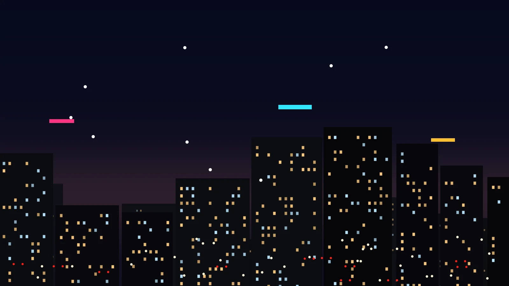
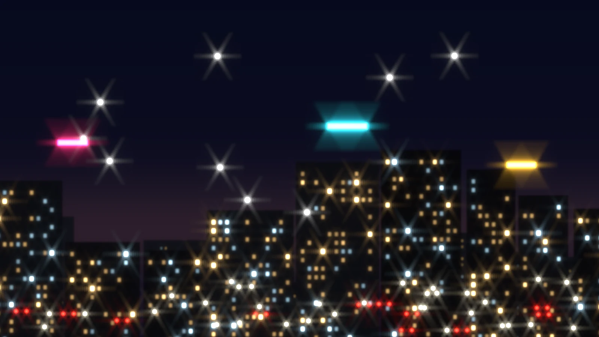
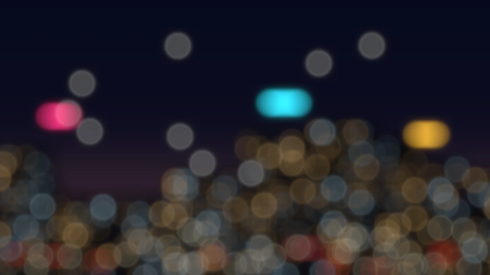
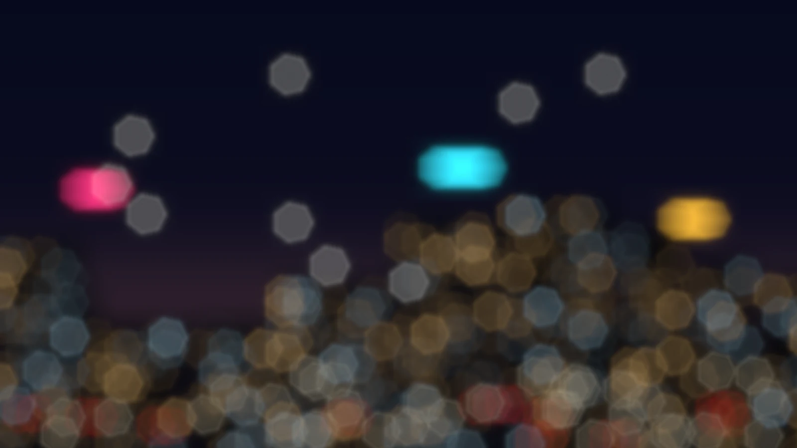
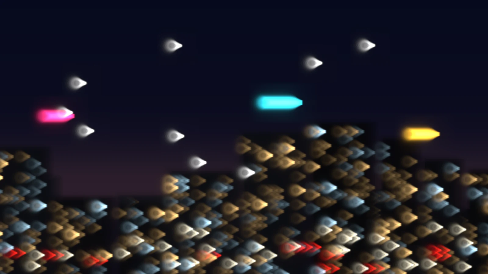
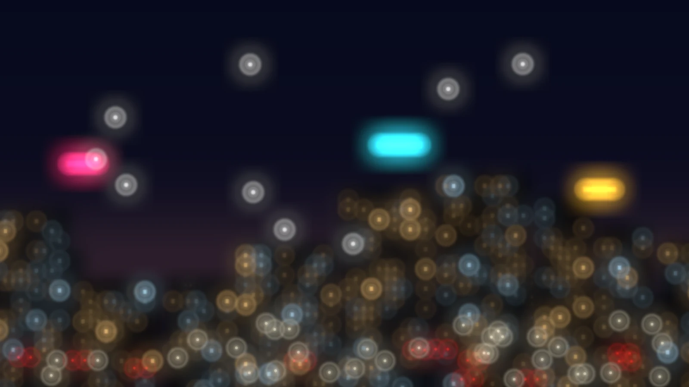
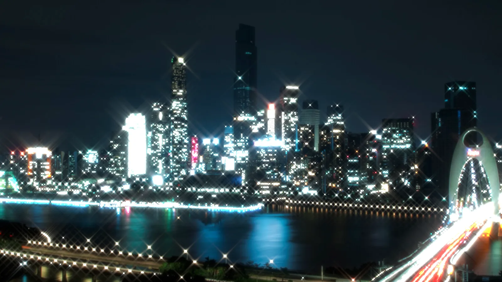

作例と設定値
同じ夜景の素材に、表の項目だけを変えて適用した5つの作例です。表にない項目はデフォルトのままです。画像の境目を左右に動かすと、素材と見比べられます。
デフォルトの値は、適用量100%、利得100%、線形光オフ、ハイライトのしきい値95%、ハイライトの強さ1倍、ディザオフ、波長550nm、F値8、画素ピッチ4μm、カーネル半径15画素、品質標準、開口形状円形、羽根枚数6、開口回転0°、中央遮蔽0%、波面収差の6項目はすべて0 wavesです。
画像は、1920×1080の合成した夜景に、波動光学のCPUの経路の計算をそのまま呼び出して適用し、中央の1600×900を切り出したものです。YMM4の画面ではありません。GPUの経路とは1ビット単位では一致せず、差は測った範囲で最大2階調でした。にじみの大きさは画素を単位に決まるので、素材の解像度が違うと見え方も変わります。
目次
1. 光源から星形の光条を出す
羽根枚数6の開口で、光源から6本の光条を出します。


| 項目 | 値 |
|---|---|
| F値 | 16 |
| 画素ピッチ | 2μm |
| カーネル半径 | 63画素 |
| 開口形状 | 正多角形 |
| 線形光 | オン |
| ハイライトのしきい値 | 90% |
| ハイライトの強さ | 30倍 |
光条が出るのは、開口形状を正多角形にしているためです。羽根枚数はデフォルトの6枚で、偶数なので光条は6本になります。光条の光は弱いので、線形光をオンにして、ハイライトの強さで光源を持ち上げています。持ち上がるのはしきい値の90%を超える画素だけで、暗い部分の見え方は変わりません。ネオン管のような細長い光源の周りには、蝶ネクタイの形のにじみが出ます。
調整
- 光条を太く長くするには、F値を上げるか画素ピッチを下げます。広がった分だけ光が薄まるので、見えにくくなったらハイライトの強さを上げます。
- 光条の本数は羽根枚数で変えます。偶数なら枚数と同じ本数で、奇数なら2倍です。
- 光条の向きは開口回転で変えます。開口回転はアニメーションに対応しているので、光条をゆっくり回せます。
- 全体が明るくなりすぎたら、利得を下げます。ハイライトは光を足すので、出力の光の総量が増えます。
2. 多角形の玉ボケにする
ピントを外して、光源を玉ボケにします。玉の形は、開口の形と同じになります。


左は開口形状が円形、右は開口形状が正多角形で羽根枚数が7の場合です。
| 項目 | 値 |
|---|---|
| デフォーカス | 3 waves |
| カーネル半径 | 63画素 |
| 品質 | 高精度 |
| 開口形状 | 円形、または正多角形 |
| 羽根枚数 | 7（正多角形のとき） |
| 線形光 | オン |
| ハイライトのしきい値 | 85% |
| ハイライトの強さ | 6倍 |
デフォーカスを大きくすると、点の光は開口と同じ形の円盤に広がります。玉の形は、円形の開口なら丸、7枚羽根の開口なら七角形です。明るい光源の玉は、線形光とハイライトで持ち上げています。
デフォーカスはスライダーの上限の3 wavesです。デフォルトの光学系では、にじみが中心から約46画素まで広がるので、カーネル半径を63画素にして、切り取られないようにしています。品質を高精度にしたのは、大きな波面収差を細かい格子で表すためです。この設定のカーネルは、格子が2048×2048のときとの差が、標準の品質では0.51、高精度では0.03です。差の求め方は設定の選び方にあります。
調整
- 玉の大きさはデフォーカスで決めます。大きさの目安は設定の選び方にあります。
- 玉の形は羽根枚数と開口回転で決めます。枚数を増やすと円に近づきます。
- 玉が重なって濁るときは、ハイライトの強さか利得を下げます。
3. 片側へ尾を引かせる
光源が、片側へ尾を引く彗星のような形になります。

| 項目 | 値 |
|---|---|
| 水平コマ収差 | 1 waves |
| カーネル半径 | 63画素 |
| 品質 | 高精度 |
| 線形光 | オン |
| ハイライトのしきい値 | 90% |
| ハイライトの強さ | 12倍 |
水平コマ収差を正の値にすると、光の芯が右に残り、左へ扇形に広がります。広がった部分に重なるのは、弧の模様です。窓の明かりが並ぶ部分では、矢じりのような形が重なって見えます。
この設定の広がりは、光の90%が収まる半径が約29画素、99%が収まる半径が約45画素で、カーネル半径63画素に収まっています。
調整
- 円形の開口では、符号を反対にすると尾の向きが左右逆になります。計算した広がりを左右反転すると、符号を反対にした広がりと一致することを確かめています。
- 垂直コマ収差にすると尾が縦に伸び、水平と垂直を同時に入れると斜めに伸びます。
- 広がりが大きすぎるときは、F値を下げるか、画素ピッチを上げるか、コマ収差の値を小さくします。
4. 同心円の輪が入った玉ボケ
光源が、同心円の輪の入った玉になります。

| 項目 | 値 |
|---|---|
| F値 | 10 |
| カーネル半径 | 63画素 |
| 品質 | 高精度 |
| 球面収差 | -1 waves |
| デフォーカス | 0.5 waves |
| 線形光 | オン |
| ハイライトのしきい値 | 92% |
| ハイライトの強さ | 8倍 |
球面収差を入れてデフォーカスすると、玉の中に何本かの輪が現れ、中心には小さな明るい点が残ります。
この組み合わせは広がりが大きくなりやすいので、F値を10に下げて、輪がカーネル半径63画素の中に収まるようにしています。収まらないと、玉の周りに薄い四角い縁が出ます。F値を16にした試作では、この縁が見えました。
調整
- 輪の数や間隔は、球面収差とデフォーカスの値で変わります。値を動かして形を探してください。
- 四角い縁が見えたら、F値を下げるか画素ピッチを上げて、広がりを小さくします。
- 球面収差の絶対値を大きくするときは、品質を上げてください。この設定のカーネルは、格子が2048×2048のときとの差が、標準の品質では0.24、高精度では0.03です。
5. 光条をX字にする
羽根枚数を4枚にして開口を45°回すと、光条が斜めのX字になります。

| 項目 | 値 |
|---|---|
| F値 | 16 |
| 画素ピッチ | 2μm |
| カーネル半径 | 63画素 |
| 開口形状 | 正多角形 |
| 羽根枚数 | 4 |
| 開口回転 | 45° |
| 線形光 | オン |
| ハイライトのしきい値 | 90% |
| ハイライトの強さ | 30倍 |
羽根枚数が4枚の開口は正方形で、光条は4本です。開口回転が0°なら上下左右の十字になり、45°回すと斜めのX字になります。
調整
- 開口回転はアニメーションに対応しています。0°から90°まで動かすと、十字とX字を行き来しながら光条が回ります。
- 光条の濃さは、ハイライトの強さとしきい値で変えます。